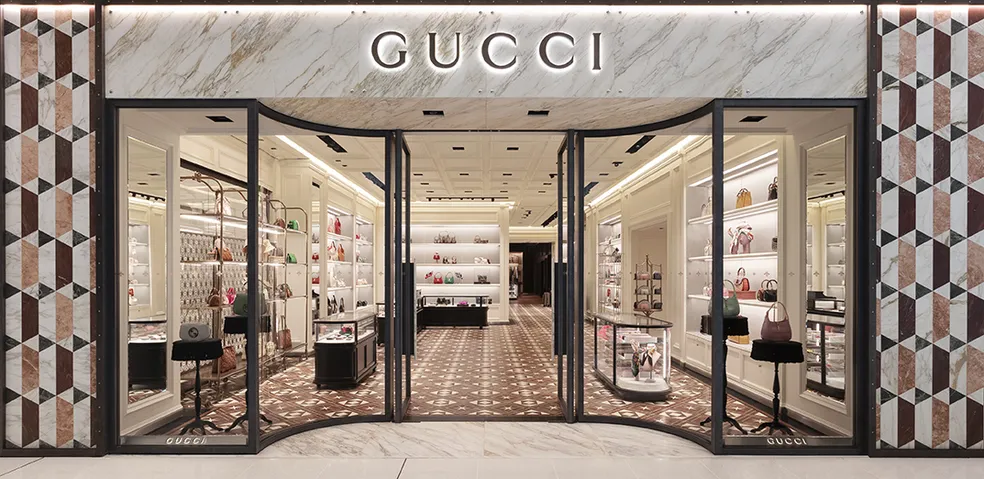

Gucci
A Gucci Gucci é uma casa de moda de luxo italiana com sede em Milão[1], Itália. Suas linhas de produtos incluem bolsas, roupas, calçados, jóias, acessórios, maquiagem, fragrâncias e itens decoração para a casa.
Nosso centro de distribuição fica em Loja Gucci, Cidade Jardim, em São Paulo. De lá, saem 48 aviões que distribuem nossos produtos às casas do mundo todo. Nosso centro de distribuição:

Compre suas roupas de luxo na nossa loja Gucci. Acesse nossa loja, conheça nossa história e nossos diferenciais.
História
A história da Gucci começou em 1921, quando Guccio Gucci abriu seu primeiro ateliê e loja de artigos de couro em Florença. Após trabalhar como maleiro e recepcionista no requintado Hotel Savoy, em Londres, ele observou o requinte e as malas da alta sociedade, o que o inspirou a criar seus próprios acessórios de viagem artesanais e de alta qualidade.
O sucesso foi imediato entre a elite local, e a marca logo expandiu seu catálogo. Na década de 1930, diante de sanções comerciais na Itália, a escassez de couro forçou a criatividade da grife, que passou a utilizar materiais inovadores, como o cânhamo, e criou em 1932 o famoso mocassim com a fivela de freio de cavalo. Esses elementos se tornariam grandes símbolos da elegância da marca.
Com o passar dos anos e a entrada dos filhos de Guccio nos negócios, a Gucci ganhou o mundo. A década de 1950 marcou a abertura da primeira loja internacional em Nova York e o nascimento de outro ícone atemporal: a bolsa com alça de bambu. Foi também nessa época que surgiu o famoso logotipo com os dois "G" entrelaçados, eternizando as iniciais do fundador.
Apesar do sucesso global, a dinastia familiar foi marcada por graves disputas internas e crises nas décadas de 1970 e 1980. A situação culminou no assassinato de Maurizio Gucci, o então presidente da empresa, em 1995, encomendado por sua ex-esposa. Enfrentando grandes dificuldades financeiras e brigas judiciais, a família vendeu o controle total da empresa.
Diferenciais
- Melhor roupas de grife da moda
- Se você achar uma loja mais estilosa, leva o produto de graça
- Pague em reais, dólares, euros ou bitcoins
- Todas as compras com frete grátis para o mundo todo
- Maior comércio eletrônico de moda do mundo
- Atendimento via telefone, email, chat, twitter, facebook, carta, fax e telegrama
- Presente em mais de 124 países
- Mais de um milhão de funcionários em todo o mundo ....